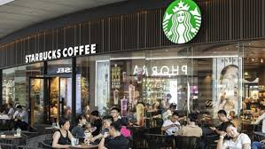

Fase de Inspiración
Afectados
Perfil ficticio de afectados
¿Qué piensa y siente?
Esta cansado de los tiempos de espera, tiene clases y tiene que salir rápido a su clase, pero quiere comprar comida.
¿Que escucha?
Otros estudiantes quejándose del tiempo de espera, que tienen poco tiempo.
¿Que hace?
Si el tiempo de espera es alto prefiere no comprar y comprar después o en otro lugar. En otros casos si tiene amigos en la fila también se colan.
¿Que ve?
Estudiantes colándose, las monis estresadas, estudiantes indecisos en que van a comprar, filas desorganizadas.
¿Cuáles son sus dolores?
No puede escuchar a la monis cuando llama para entregar un pedido, llegar tarde a clase, tener hambre en la clase.
¿Cuáles son sus necesidades?
Poder comprar y tener comida en el menor tiempo posible.
Guía de entrevistas a afectados
- ¿Con qué frecuencia comes en los restaurantes de la universidad?
- ¿Crees que los tiempos de espera son adecuados?
- ¿En qué horario sueles ir a los restaurantes?
- ¿Cuánto tiempo sueles esperar en promedio para recibir tu comida?
- ¿Consideras que los tiempos de espera son adecuados? ¿Por qué?
- ¿Has dejado de comprar comida en la universidad por los tiempos de espera?
- ¿Cómo describirías tu experiencia general al pedir comida en los restaurantes universitarios?
- ¿Crees que el proceso de pedido y pago es eficiente? ¿Por qué?
- ¿Qué factores crees que influyen en los tiempos de espera (cantidad de clientes, rapidez del personal, sistema de pedidos, etc.)?
- ¿Qué cambios te gustaría ver para mejorar los tiempos de espera?
- ¿Crees que la universidad debe mejorar los tiempos de espera?
Expertos
Perfil ficticio de expertos
¿Qué piensa y siente?
Esta estresada porque tiene muchos estudiantes en la fila, los estudiantes se tardan en decidir y no revisan las vitrinas antes de llegar a la caja.
¿Que escucha?
Otras monis corriendo para poder entregar lo más rápido posible, estudiantes quejándose del tiempo de espera.
¿Que hace?
Intenta atender lo más rápido posible y adelantar o facilitar el trabajo de las otras monis.
¿Que ve?
Estudiantes colándose, las monis estresadas, estudiantes indecisos en que van a comprar, filas desorganizadas, estudiantes poco interesados en trabajar en PAT alimentación.
¿Cuáles son sus dolores?
No escuchan bien las indicaciones de los clientes, tienen que gritas y gastar su voz para poder hacer los llamados.
¿Cuáles son sus necesidades?
Poder hacer su trabajo de la manera más eficiente.
¿Por qué escogimos a estas personas?
Estas personas son las que tienen el mayor impacto en los tiempos de espera. Adicionalmente son las personas que están en este ambiente todo el tiempo y conocen el proceso de principio a fin.
Guía de entrevistas a expertos
- Basado en tu experiencia, ¿cuáles son los principales desafíos en la gestión de los restaurantes?
- ¿Qué factores consideras que influyen más en los tiempos de espera en los restaurantes?
- ¿Cómo evaluarías la eficiencia del proceso de pedido y pago en los restaurantes universitarios?
- ¿Qué estrategias o herramientas tecnológicas recomendarías para mejorar la velocidad del servicio en un entorno con alta afluencia de clientes?
- ¿Que cambios logísticos podrías implementar para reducir la congestión a la hora de realizar un pedido?
- ¿Como se podría mejorar la coordinación y manejo del personal para optimizar la atención y lograr minimizar los tiempos de espera?
- ¿Qué tan viable consideras la implementación de un sistema de pedidos?
Inmersión
Perfil de los lugares de inmersión
Universidad de la Sabana
Mapa con puntos de venta de alimentos

Dentro de la Universidad de la Sabana hay multiples puntos de venta de alimentos, sin embargo tambien se cuentan con cientos de personas en el día a día dentro del campus. Es por eso que en las horas picos se encuentran con altos tiempos de espera.
Actividades de inmersión (fotografías)
Punto verde

Escogimos estos lugares porque en ellos se ve los altos tiempos de espera, adicionalmente que son lugares de interés para la comunidad universitaria.
Inspiración
Perfil de los lugares de inspiración
Starbucks Estados Unidos

Características de interés: Que condiciones o características del lugar hace que no se presente la problemática o que evidencie cómo ha sido resuelta.
¿Por qué escogimos estos lugares?
5 Historias
Relatos inspiradores sobre el problema y su contexto.